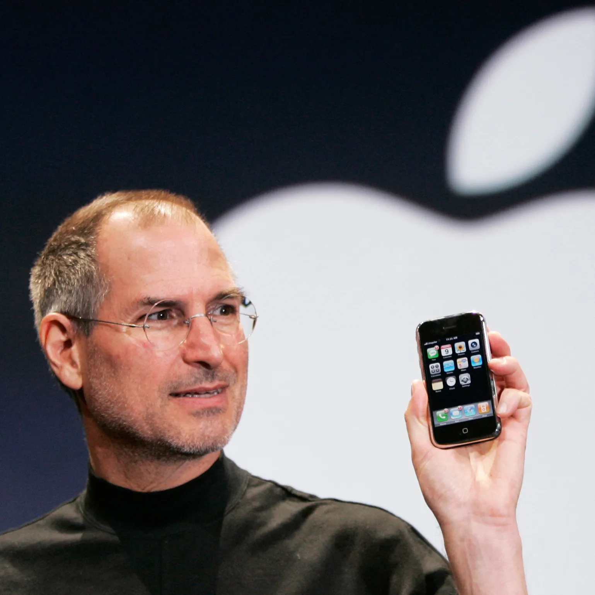

Historia de Internet - Línea del Tiempo
Desde ARPA hasta la era de la nube

Eventos Relacionados
| 2004 - Facebook | 1998 - Google | 2010 - Era de la Nube | 1993 - Mosaic |
2007 – Internet MóvilEl 9 de enero de 2007, Steve Jobs subió al escenario del Moscone Center en San Francisco para la conferencia Macworld y pronunció lo que se convertiría en una de las presentaciones de productos más icónicas de la historia: "Hoy, Apple va a reinventar el teléfono". Jobs presentó el iPhone original, un dispositivo que no solo transformó la industria telefónica, sino que fundamentalmente cambió cómo las personas acceden a Internet y usan la tecnología en su vida diaria. Antes del iPhone, los teléfonos inteligentes ya existían - dispositivos como el BlackBerry y el Palm Treo permitían navegar por Internet y revisar correos electrónicos. Sin embargo, la experiencia era torpe y limitada. Las pantallas eran pequeñas, los navegadores eran lentos y mostraban versiones reducidas de sitios web, y la mayoría de los dispositivos requerían styluses o teclados físicos diminutos. El iPhone cambió radicalmente esta ecuación con una gran pantalla táctil multitouch (3.5 pulgadas, enorme para su época), sin teclado físico, y el navegador Safari móvil que mostraba sitios web completos, no versiones móviles degradadas. La interfaz revolucionaria del iPhone hizo que navegar por Internet fuera intuitivo. Los usuarios podían hacer zoom con gestos de pellizco, desplazarse con toques suaves, y rotar el dispositivo para ver contenido en modo horizontal. Por primera vez, el Internet "real" - no una versión simplificada - estaba disponible en tu bolsillo. Jobs demostró esto en el escenario navegando por The New York Times y mostrando Google Maps con imágenes satelitales, capacidades que parecían casi mágicas en ese momento. El lanzamiento del iPhone en junio de 2007 marcó el comienzo de la era del Internet móvil, pero su verdadero impacto explotó en 2008 cuando Apple abrió la App Store.  🔗 Fuente: apple.com/newsroom/iphone-announcement |